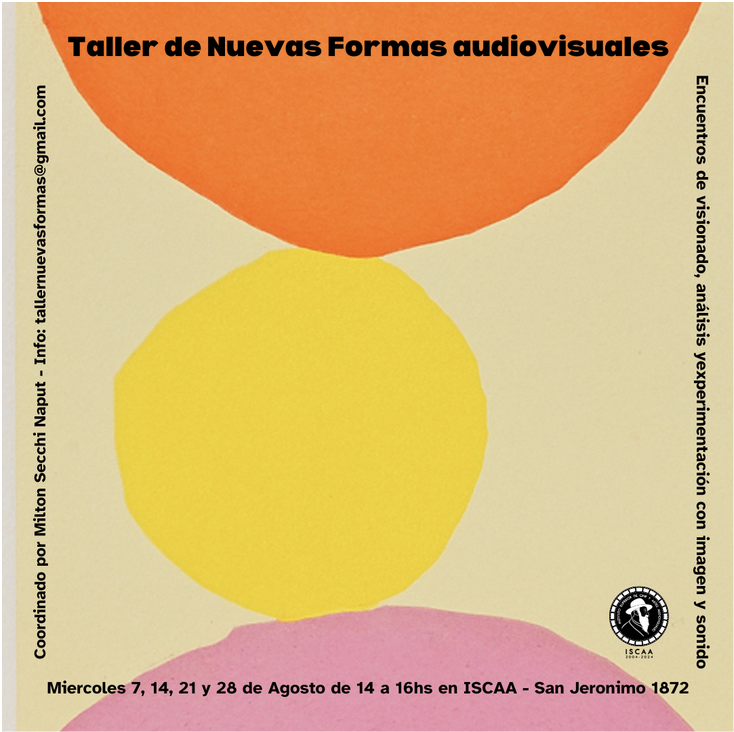

El taller invita a los participantes a ver y reflexionar sobre materiales que exploran los límites expansivos de lo que entendemos como cine y/o video. A través de documentales, animaciones, ficciones híbridas y otras propuestas — con obras de Basma Alsharif, Apichatpong Weerasethakul, Rawane Nassif, Ignacio Aguero, Parastoo Anoushapoor, entre otros — el programa presenta piezas que trabajan con nociones como paisaje, archivo, performance y diversas formas de escritura, entrelazando lo público y lo íntimo, lo político y lo imaginario, desde una perspectiva decolonial y desde los sures globales.
The workshop invites participants to watch and reflect on materials that explore the expansive boundaries of what we understand as cinema and/or video. Through documentaries, animations, hybrid fictions, and other proposals — with works by Basma Alsharif, Apichatpong Weerasethakul, Rawane Nassif, Ignacio Aguero, Parastoo Anoushapoor, among others — the program presents pieces that engage with notions such as landscape, archive, performance and diverse forms of writing, intertwining the public and the intimate, the political and the imaginary, from a decolonial perspective and from the standpoint of the global Souths.
Además de proyecciones y debates, el taller incluye ejercicios prácticos que permiten a los participantes activar estas experiencias en su propia práctica. La experimentación es abordada como un espacio abierto para la maravilla, la deriva y la creación colectiva.
In addition to screenings and discussions, the workshop includes practical exercises that allow participants to activate these experiences in their own practice. Experimentation is approached as an open space for wonder, drift, and collective creation.